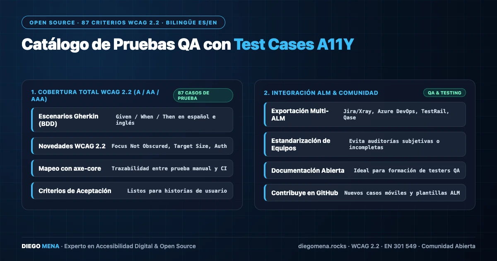

Test Cases A11Y: 87 casos de prueba bilingües WCAG 2.2
Catálogo estructurado y bilingüe con los 87 criterios de conformidad WCAG 2.2 (Niveles A, AA y AAA), pasos en formato Gherkin, mapeo de reglas axe-core y exportador hacia Jira/Xray.

Una auditoría sin casos de prueba reproducibles es una opinión. Test Cases A11Y convierte los 87 criterios de conformidad de WCAG 2.2 (niveles A, AA y AAA) en un catálogo estructurado y bilingüe de procedimientos ejecutables, listo para integrarse en el ciclo de QA de cualquier equipo.
Gherkin como lengua franca
Cada criterio se documenta en formato Gherkin (Given / When / Then), el mismo lenguaje que usan las herramientas BDD como Cucumber. Así, un caso de prueba de accesibilidad lo puede ejecutar un auditor humano, pero también evolucionar hacia una especificación automatizable sin rescribirlo.
Escenario: Indicador de foco visible en enlaces
Dado que el usuario navega solo con teclado
Cuando pulsa Tab hasta el primer enlace del contenido
Entonces el indicador de foco es visible
Y su contraste con el fondo adyacente es de al menos 3:1Mapeo con reglas axe-core
Cada caso indica qué reglas de axe-core lo cubren parcialmente y qué parte exige verificación humana. Esta distinción es clave: las herramientas automáticas cubren una fracción de WCAG, y el catálogo explicita exactamente cuál es la frontera entre lo automatizable y lo manual en cada criterio.
Exportación a Jira y Xray
El catálogo incluye un exportador que transforma los casos al formato de importación de Jira y Xray, para que el plan de pruebas de accesibilidad viva junto al resto de la gestión de calidad del proyecto en lugar de quedar en una hoja de cálculo aislada.
Bilingüe desde el diseño
Todos los casos existen en español e inglés, lo que permite a equipos internacionales auditar con el mismo corpus y reportar en el idioma del cliente sin traducciones improvisadas que distorsionen la redacción normativa de WCAG.
El catálogo es open source en github.com/ingelectronicadj/test-cases-a11y.